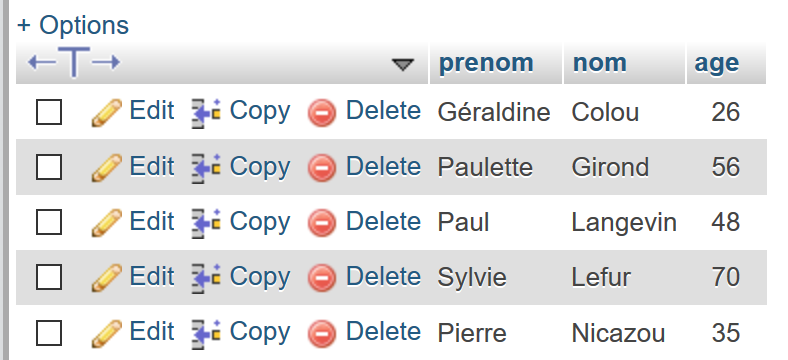
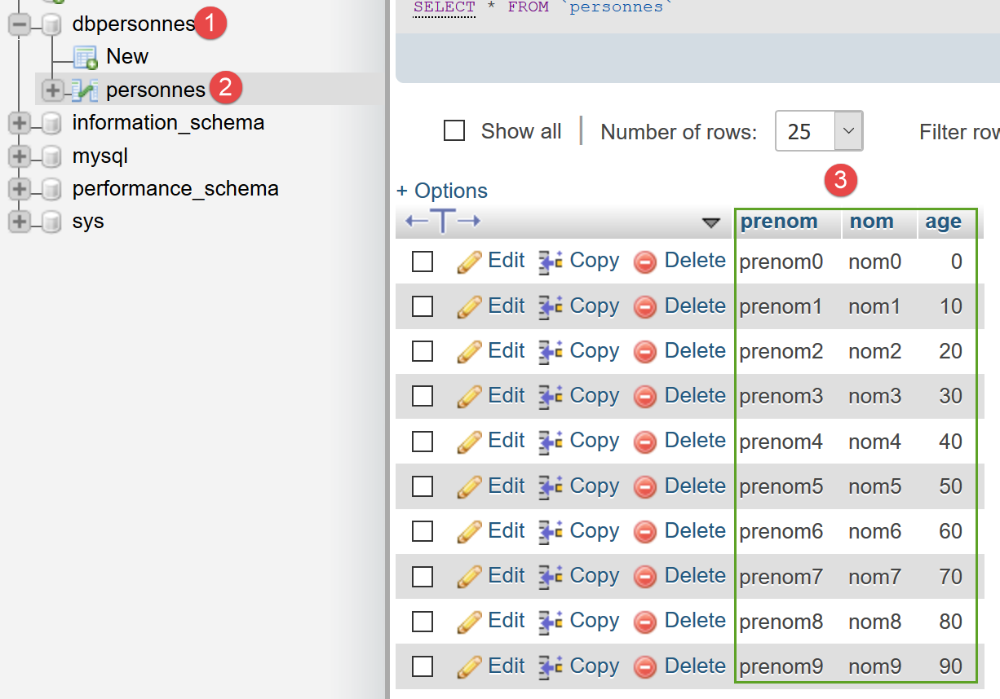

12. 使用 MySQL 数据库管理系统

接下来，我们将编写使用 MySQL 数据库的 PHP 脚本：

在上述架构中，PHP脚本（1）不会直接与数据库管理系统（DBMS）（3）通信。它通过一个称为DBMS驱动程序的中介进行通信。 PHP 为这些驱动程序提供了一个标准接口，即 PDO（PHP 数据对象）接口。该接口由针对不同 DBMS 量身定制的各类类实现：一个类用于 MySQL DBMS，另一个类用于 PostgreSQL DBMS……要切换 DBMS，我们只需切换驱动程序：

PDO 驱动程序将 PHP 脚本 (1) 与数据库管理系统 (DBMS) (3, 6) 隔离。由于这些驱动程序实现了标准接口，因此人们可能会认为，在从 MySQL 数据库管理系统 (3) 切换到 PostgreSQL 数据库管理系统 (6) 时，PHP 脚本 (1) 无需进行任何修改。 实际上，这种理想情况并不存在。事实上，为了与数据库管理系统通信，PHP脚本会发送SQL（结构化查询语言）命令。虽然所有数据库管理系统都实现了这种语言，但它并不完整。因此，数据库管理系统都向其中添加了专有命令。这是数据库管理系统之间不兼容的主要原因之一。此外，不同数据库管理系统中可用的数据类型可能各不相同。 例如，PostgreSQL 支持的数据类型范围远比 MySQL 数据库管理系统广泛。这是导致不兼容的第二个原因。另一个原因是自动主键（由数据库管理系统生成）的处理方式：几乎每个数据库管理系统都有自己的处理策略。等等……导致不兼容的原因不胜枚举。
若要在从 MySQL (3) 切换至 PostgreSQL (6) 时避免重写 PHP 脚本 (1)，通常需要在 PHP 脚本 (1) 与 PDO 驱动程序 (2, 5) 之间插入一个新层，其作用是解决两个 DBMS 之间的兼容性问题。不过，在我们即将遇到的简单场景中，这一额外层将并非必要。
接下来我们将使用 MySQL 数据库管理系统。该系统已包含在 Laragon 软件包中（参见链接部分）。
如果读者对数据库和 SQL 的概念尚不熟悉，文档 [http://sergetahe.com/cours-tutoriels-de-programmation/cours-tutoriel-sql-avec-le-sgbd-firebird/] 可能会有所帮助。 该文档虽使用 Firebird 数据库管理系统而非 MySQL，但涵盖了数据库和 SQL 的基础知识。与 MySQL 类似，Firebird 提供了一个内存占用较小的免费版本。
12.1. 创建数据库
接下来，我们将向您演示如何使用 Laragon 工具创建数据库和 MySQL 用户。

- 启动后，可通过菜单 [2] 管理 Laragon [1]；
- 在 [3-5] 中，若尚未安装，请安装 MySQL 管理工具 [phpMyAdmin]；

- 在 [6] 处，启动 Apache Web 服务器和 MySQL 数据库管理系统；
- 在 [7] 处，Apache 服务器已启动；
- 在 [8]，启动 MySQL 数据库服务器；

- 在 [8-10] 中，创建一个名为 [dbpersonnes] 的数据库 [11]。我们将构建一个人员数据库；

- 在[11]中，我们将管理刚刚创建的数据库；

- [Databases] 操作会向 URL [http://localhost/phpmyadmin] 发送一个 Web 请求。Laragon 的 Apache Web 服务器会做出响应。URL [http://localhost/phpmyadmin] 是我们之前安装的 [phpMyAdmin] 工具的访问地址 [5]。该工具允许您管理 MySQL 数据库；
- 默认情况下，数据库管理员的登录凭据为：root [13]，无密码 [14]；

- 在 [16] 中，是我们之前创建的数据库；

- 目前，我们有一个名为 [dbpersonnes] [17] 的空数据库 [18]；
我们创建一个用户 [admpersonnes]，密码为 [nobody]，该用户将拥有 [dbpersonnes] 数据库的全部权限：

- 在 [19] 中，我们定位在 [dbpersonnes] 数据库上；
- 在 [20] 中，我们选择 [权限] 选项卡；
- 在 [21-22] 中，我们可以看到用户 [root] 对 [dbpersonnes] 数据库拥有完全权限；
- 在 [23] 中，我们创建了一个新用户；

- 在 [25-26] 中，该用户的用户名将设置为 [admdbpersonnes]；
- 在 [27-29] 中，其密码将设置为 [nobody]；
- 在 [30] 中，phpMyAdmin 提示该密码强度极低（易被破解）。在生产环境中，最好通过 [31] 生成一个强密码；
- 在 [32] 中，指定用户 [admdbpersonnes] 必须对 [dbpersonnes] 数据库拥有完全权限；
- 在 [33] 中，所提供的信息经过了验证；

- 在 [35] 中，phpMyAdmin 提示用户已创建；
- 在[36]中，执行了针对该数据库的SQL查询；
- 在[37]中，用户[admpersonnes]对[dbpersonnes]数据库拥有完全权限；
现在我们拥有：
- 一个 MySQL 数据库 [dbpersonnes]；
- 一个用户 [admpersonnes/nobody]，该用户对该数据库拥有完全访问权限；
我们将编写 PHP 脚本与数据库进行交互。PHP 提供了多种用于管理数据库的库。我们将使用 PDO（PHP Data Objects）库，它充当 PHP 代码与数据库管理系统（DBMS）之间的中介：

PDO 库使 PHP 脚本能够抽象化所使用的 DBMS 的具体特性。因此，如上所示，MySQL DBMS 可以被 PostgreSQL DBMS 替换，而对 PHP 脚本代码的影响微乎其微。该库默认不可用。您可以按以下方式检查其可用性：

- 在 [1-4] 中，检查已启用的 PDO 扩展；
- 在 [5] 中，您可以看到针对 MySQL 数据库管理系统（DBMS）的 PDO 扩展处于激活状态，其余则未激活。只需点击它们即可将其激活；
启用扩展的另一种方法是直接编辑配置 PHP 的 [php.ini] 文件（参见链接）：

- 在 [1] 中，MySQL PDO 扩展已启用；
- 在 [2] 中，已禁用 Firebird PDO 扩展；
修改 [php.ini] 文件后，必须重启 Laragon 的 PHP 服务，更改才能生效。
12.2. 连接到 MySQL 数据库
连接数据库管理系统（DBMS）需通过创建 PDO 对象实现。构造函数接受多种参数：
这些参数的含义如下：
$dsn | (数据源名称) 是一个字符串，用于指定数据库管理系统 (DBMS) 的类型及其在互联网上的位置。 字符串 "mysql:host=localhost" 表示我们正在处理一个在本地服务器上运行的 MySQL 数据库管理系统。该字符串可能包含其他参数，例如数据库管理系统的监听端口以及我们要连接的数据库名称："mysql:host=localhost:port=3306:dbname=dbpersonnes"; |
$user | 登录用户的用户名； |
$passwd | 用户的密码； |
$driver_options | DBMS 驱动程序的选项数组； |
仅第一个参数是必需的。以此方式创建的对象将作为对已连接数据库执行所有操作的基础。如果无法创建 PDO 对象，则会抛出 PDOException。
以下是一个连接示例 [mysql-01.php]：
<?php
// connection to a local MySql database
// user identity is (admpersonnes,nobody)
const ID = "admpersonnes";
const PWD = "nobody";
const HOTE = "localhost";
try {
// connection
$dbh = new PDO("mysql:host=".HOTE, ID, PWD);
print "Connexion réussie\n";
// closing the connection
$dbh = NULL;
} catch (PDOException $e) {
print "Erreur : " . $e->getMessage() . "\n";
exit();
}
结果：
评论
- 第 11 行：通过创建 PDO 对象来建立与数据库管理系统 (DBMS) 的连接。此处调用构造函数时使用了以下参数：
- 一个字符串，用于指定数据库管理系统（DBMS）的类型及其在互联网上的位置。字符串“mysql:host=localhost”表示我们正在处理一个运行在本地服务器上的MySQL数据库管理系统。端口未指定，因此默认使用3306端口。数据库名称也未指定。此时将建立与MySQL数据库管理系统的连接，具体数据库的选择将在稍后进行；
- 用户 ID；
- 其密码；
- 第 14 行：通过销毁最初创建的 PDO 对象来关闭连接；
- 第 15 行：连接数据库管理系统可能失败。此时将抛出 PDOException。该异常继承自 PHP 的 [RuntimeException]；
- 第 16 行：显示该异常的错误信息；
现在让我们在第 6 行输入错误的密码，重新运行脚本。结果如下：
Erreur : SQLSTATE[HY000] [1045] Access denied for user 'admpersonnes'@'localhost' (using password: YES)
12.3. 创建表
脚本 [mysql-02.php] 演示了如何在数据库中创建表：
<?php
// database identity
const DSN = "mysql:host=localhost;dbname=dbpersonnes";
// user login
const ID = "admpersonnes";
const PWD = "nobody";
try {
// connection to the MySql database
$connexion = new PDO(DSN, ID, PWD);
// delete the people table if it exists
$sql = "drop table personnes";
$connexion->exec($sql);
// create people table
$sql = "create table personnes (prenom varchar(30) NOT NULL, nom varchar(30) NOT NULL, age integer NOT NULL, primary key(nom,prenom))";
$connexion->exec($sql);
} catch (PDOException $ex) {
// error display
print "Erreur : " . $ex->getMessage() . "\n";
} finally {
// disconnect if necessary
$connexion = NULL;
}
// end
print "Terminé\n";
exit;
注释
- 第 11 行：连接到数据库。这是必须首先执行的操作。连接的结果是一个 [PDO] 对象，后续的数据库操作将通过该对象进行；
- 第 13 行：SQL 语句 [drop table people] 将从 [people_db] 数据库中删除 [people] 表。如果 [people] 表不存在，则不会引发错误；
- 第 14 行：在 [dbpersonnes] 数据库上执行前面的 SQL 语句。此操作可能会抛出 [PDOException] 异常，该异常将在第 18 行被捕获；
- 第 16 行：此 SQL 语句创建了一个名为 [people] 的表。表由行和列组成。列构成了所谓的表结构，行则构成了表的内容。一个数据库可以包含一个或多个表。[people] 表将包含三个列：
- first_name：作为字符串表示的个人名字，长度不超过 30 个字符；
- last_name：该人的姓氏，作为长度不超过 30 个字符的字符串；
- age：该人的年龄，以整数形式表示；
- 列上的 NOT NULL 属性要求该列必须有值。若未提供值，将引发 [PDOException]；
- [primary key(last_name,first_name)] 为 [people] 表设置主键。 主键在表的每一行中都具有唯一值。此处，主键通过将该行的 [last_name] 和 [first_name] 列拼接而成。此约束确保表中不会包含两个姓氏和名字相同的人——即两个同名的人。在表中为同一人创建重复条目将触发 [PDOException]；
- 第 17 行：在 [dbpersonnes] 数据库上执行 SQL 查询；
- 第 20 行：若发生 [PDOException]，则显示相应的错误信息；
- 第 21–24 行：无论是否发生异常，我们都进入 [finally] 子句，以关闭数据库连接（第 23 行）；
结果：
如果脚本执行无误，可在 phpMyAdmin 中看到该表：


- 在 [3] 中是数据库；
- 在 [4] 中，该表已显示；
- 在 [5] 中，表格结构显示在 [结构] 选项卡中；
- 在 [6-8] 中，表格的三列；
- 在 [9] 中，这三列均不得为空；

- 在 [10] 中，显示的是表索引列表。使用索引可以比顺序扫描表中的行更快地查找具有特定索引的行。主键总是索引的一部分，但索引未必是主键；
- 在 [11] 中，此处的索引即为主键；
- 在 [12] 中，索引由每行中的 [last_name, first_name] 列组成；
现在，让我们看看如果分别在数据库名、用户名和密码中引入错误会发生什么：
如果输入一个不存在的数据库名称：
Erreur : SQLSTATE[HY000] [1044] Access denied for user 'admpersonnes'@'%' to database 'dbpersonnes2'
如果输入不存在的用户名：
Erreur : SQLSTATE[HY000] [1045] Access denied for user 'admpersonnes2'@'localhost' (using password: YES)
如果输入了错误的密码：
Erreur : SQLSTATE[HY000] [1045] Access denied for user 'admpersonnes'@'localhost' (using password: YES)
12.4. 填充表
我们将编写一个 PHP 脚本，用于执行以下文本文件 [creation.txt] 中包含的 SQL 命令：
注释
- SQL（结构化查询语言）对 SQL 命令不区分大小写；
- 第 1 行：如果 [people] 表存在，则将其删除；
- 第 2 行：我们告知 MySQL 服务器将向其发送 UTF-8 编码的字符。此处必须使用这一 MySQL 特有的 SQL 命令，例如，以确保 Géraldine 中的 "é" 在数据库中正确显示。如果省略第 2 行，"é" 将被转换为一串奇怪的字符。 客户端是使用 NetBeans 编写的 PHP 脚本。该脚本将文件编码为 UTF-8 [1-4]，如下所示：

- 第 3 行：创建 [people] 表，包含三个字段（first_name、last_name、age）及主键（last_name、first_name）；
- 第 4–10 行：向 [people] 表插入 7 行数据；
- 第 6 行：此插入语句应失败，因为它试图执行与第 5 行相同的插入操作。主键约束应阻止此插入：两个人不能拥有相同的名和姓；
- 第 10 行：该插入语句应失败，因为它试图执行与第 9 行相同的插入操作；
负责执行此文本文件中 SQL 语句的 PHP 脚本如下 [mysql-03.php]：
<?php
// database identity
const DSN = "mysql:host=localhost;dbname=dbpersonnes";
// user login
const ID = "admpersonnes";
const PWD = "nobody";
// identity of the SQL command text file to be executed
const SQL_COMMANDS_FILENAME = "creation.txt";
// open database connection MySql
try {
$connexion = new PDO(DSN, ID, PWD);
} catch (PDOException $ex) {
// error display
print "Erreur : " . $ex->getMessage() . "\n";
exit;
}
// we want every SGBD error to trigger an exception
$connexion->setAttribute(PDO::ATTR_ERRMODE, PDO::ERRMODE_EXCEPTION);
// order file execution SQL
$erreurs = exécuterCommandes($connexion, SQL_COMMANDS_FILENAME, TRUE, FALSE);
// locking connection
$connexion = NULL;
//display number of errors
printf("\n-----------------------\nIl y a eu %d erreur(s)\n", count($erreurs));
for ($i = 0; $i < count($erreurs); $i++) {
print "$erreurs[$i]\n";
}
// it's over
print "Terminé\n";
exit;
// ---------------------------------------------------------------------------------
function exécuterCommandes(PDO $connexion, string $SQLFileName, bool $suivi = FALSE, bool $arrêt = TRUE): array {
// uses the $connexion connection
// executes the SQL commands contained in the SQLFileName text file
// this is a file of SQL commands to be executed one per line
// if $suivi=1 then each execution of a SQL order is displayed as a success or failure
// if $arrêt=1, the function stops on the 1st error encountered, otherwise it executes all sql commands
// the function returns an array (nb of errors, error1, error2...)
// check for the presence of the SQLFileName file
if (!file_exists($SQLFileName)) {
return ["Le fichier [$SQLFileName] n'existe pas"];
}
// execution of SQL queries contained in SQLFileName
// we put them in a table
$requêtes = file($SQLFileName);
// mistake?
if ($requêtes === FALSE) {
return ["Erreur lors de l'exploitation du fichier SQL [$SQLFileName]"];
}
// execute requests one by one - initially no errors
$erreurs = [];
$i = 0;
$fini = FALSE;
while ($i < count($requêtes) && !$fini) {
// retrieve the query text
// trim will remove the end-of-line marker
$requête = trim($requêtes[$i]);
// empty query?
if (strlen($requête) == 0) {
// ignore the request and move on to the next request
$i++;
continue;
}
try {
// query execution - an exception may be thrown
$connexion->exec($requête);
// screen tracking or not?
if ($suivi) {
print "$requête : Exécution réussie\n";
}
} catch (PDOException $ex) {
// an error has occurred
addError($erreurs, $requête, $ex->getMessage(), $suivi);
// shall we stop?
$fini = $arrêt;
}
// following request
$i++;
}
// result
return $erreurs;
}
function addError(array &$erreurs, string $requête, string $msg, bool $suivi): void {
// add an error msg
$msg = "$requête : Erreur (" . $msg . ")";
$erreurs[] = $msg;
// screen tracking or not?
if ($suivi) {
print "$msg\n";
}
}
注释
- [executeCommands] 函数（第 36–89 行）负责执行文本文件 [$SQLFileName]（参数 2）中的 SQL 命令。为了执行这些命令，它使用与 MySQL 服务器建立的已打开连接 [$connection]（参数 1）。 第三个参数 [$log] 是一个布尔值，用于控制屏幕输出：若为 TRUE，则执行的 SQL 语句及其成功或失败状态（ ）将显示在屏幕上；否则，SQL 语句的执行将静默进行。第四个参数 [$stop] 控制 SQL 命令失败时的处理方式：若为 TRUE，则表示必须停止执行 SQL 命令；否则，将继续执行。 [executeCommands] 函数返回一个错误消息数组，若无错误则返回空数组；
- 第 11–18 行：我们打开与 MySQL 数据库 [dbpersonnes] 的连接。如果打开连接失败，将显示一条错误消息并终止进程（第 14–18 行）；
- 第 22 行：随后我们将已建立的连接传递给 [executeCommands] 函数。该连接将在函数返回时关闭（第 24 行）；
- 第 20 行：在将连接传递给 [executeCommands] 函数之前，会先对其进行配置。如果发生错误，使用 [PDO] 对象执行的 SQL 操作可能会返回布尔值 FALSE（默认值），也可能抛出异常。第 20 行选择了后者。事实上，人们很容易“忘记”检查执行 SQL 命令后的布尔结果。 这最终会在代码的其他地方引发错误，从而难以追溯到原始源头。在未处理的异常情况下（没有 catch 代码块），异常将沿代码链向上传播，直到遇到 catch 代码块或到达 PHP 解释器，解释器将拦截该异常。此时，将显示异常的性质及其在代码中的来源；
- 第 22 行：调用 [executeCommands] 函数来执行 SQL 命令文件 [$SQLFileName]；
- 第 45–47 行：验证 SQL 命令文件是否实际存在。如果不存在，则记录错误并返回此结果；
- 第 51 行：将 SQL 命令放入数组 [$queries] 中。第 53–55 行：如果操作失败，则返回一个包含单条消息的错误数组；
- 第 57 行：我们将错误累积到数组 [$errors] 中；
- 第 58 行：查询编号；
- 第 59 行：布尔变量 [$finished] 控制数组 [$queries] 中 SQL 语句的执行。当其变为 TRUE 时，执行停止；
- 第 60 行：遍历所有查询；
- 第 63 行：提取第 i 个 SQL 命令的文本。函数 [trim] 用于去除 SQL 命令文本前后的空格。这里所说的“空格”包括空格字符 \b、回车 \r、换行 \n、换页 \f、制表符 \t……关键在于 SQL 文本中的换行符将被移除；
- 第 65–69 行：如果 SQL 文本为空，则忽略该查询并继续处理下一条；
- 第 72 行：我们将 SQL 命令发送至 MySQL 服务器。若执行失败，[PDO::exec] 方法将抛出异常。请注意，此行为源于第 20 行设置的配置；
- 第 79 行：将错误消息添加到错误数组中；
- 第 81 行：设置控制循环的布尔变量 [$fini]。如果参数 [$arrêt]（第 36 行）为 TRUE，则必须停止循环；
- 第 74–76 行：若 SQL 语句执行成功，且参数 [$tracking]（第 36 行）为 TRUE，则将其显示在屏幕上；
- 第 87 行：所有 SQL 语句执行完毕后，返回错误数组 [$errors]；
第 90–97 行中的 [adError] 函数允许将错误添加到错误数组 [$errors] 中：
- 第 90 行：该函数接受 4 个参数：
- [$errors] 参数通过引用传递。这是因为我们需要修改作为参数传递的数组本身，而非其副本；
- [$query] 参数是失败语句的 SQL 文本；
- 参数 [$msg] 是与失败查询相关的错误消息；
- 布尔型参数 [$log] 用于指示是否应在控制台显示错误信息（$log=TRUE）或不显示（$log=FALSE）；
脚本在第 3–33 行调用了 [executeCommands] 函数：
- 第 11–18 行：与 MySQL 数据库 [dbpersonnes] 建立连接；
- 第 20 行：配置连接；
- 第 22 行：随后执行 SQL 命令文件；
- 第 24 行：关闭连接；
- 第 26–29 行：显示 [executeCommands] 函数返回的错误；
屏幕输出：
drop table if exists personnes : Exécution réussie
SET NAMES 'utf8' : Exécution réussie
create table personnes (prenom varchar(30) not null, nom varchar(30) not null, age integer not null, primary key (nom,prenom)) : Exécution réussie
insert into personnes (prenom, nom, age) values('Paul','Langevin',48) : Exécution réussie
insert into personnes (prenom, nom, age) values ('Sylvie','Lefur',70) : Exécution réussie
insert into personnes (prenom, nom, age) values ('Sylvie','Lefur',70) : Erreur (SQLSTATE[23000]: Integrity constraint violation: 1062 Duplicate entry 'Lefur-Sylvie' for key 'PRIMARY')
insert into personnes (prenom, nom, age) values ('Pierre','Nicazou',35) : Exécution réussie
insert into personnes (prenom, nom, age) values ('Géraldine','Colou',26) : Exécution réussie
insert into personnes (prenom, nom, age) values ('Paulette','Girond',56) : Exécution réussie
insert into personnes (prenom, nom, age) values ('Paulette','Girond',56) : Erreur (SQLSTATE[23000]: Integrity constraint violation: 1062 Duplicate entry 'Girond-Paulette' for key 'PRIMARY')
-----------------------
Il y a eu 2 erreur(s)
insert into personnes (prenom, nom, age) values ('Sylvie','Lefur',70) : Erreur (SQLSTATE[23000]: Integrity constraint violation: 1062 Duplicate entry 'Lefur-Sylvie' for key 'PRIMARY')
insert into personnes (prenom, nom, age) values ('Paulette','Girond',56) : Erreur (SQLSTATE[23000]: Integrity constraint violation: 1062 Duplicate entry 'Girond-Paulette' for key 'PRIMARY')
Terminé
插入的记录可在 phpMyAdmin 中查看：

12.5. 执行任意 SQL 语句
以下脚本演示了如何从文本文件 [sql.txt] 中执行 SQL 语句：
在这些 SQL 语句中，有用于从数据库中返回结果的 SELECT 语句；有用于修改数据库但不返回结果的 INSERT、UPDATE 和 DELETE 语句；最后还有像最后一条（xselect）这样的无效语句。[mysql-04.php] 脚本如下：
<?php
// database identity
const DSN = "mysql:host=localhost;dbname=dbpersonnes";
// user login
const ID = "admpersonnes";
const PWD = "nobody";
// identity of the SQL command text file to be executed
const SQL_COMMANDS_FILENAME = "sql.txt";
try {
// connection to the MySql database
$connexion = new PDO(DSN, ID, PWD);
} catch (PDOException $ex) {
// error display
print "Erreur : " . $ex->getMessage() . "\n";
exit;
}
// we want every SGBD error to trigger an exception
$connexion->setAttribute(PDO::ATTR_ERRMODE, PDO::ERRMODE_EXCEPTION);
// order file execution SQL
$erreurs = exécuterCommandes($connexion, SQL_COMMANDS_FILENAME, TRUE, FALSE);
// locking connection
$connexion = NULL;
//display number of errors
printf("\n-----------------------\nIl y a eu %d erreur(s)\n", count($erreurs));
for ($i = 0; $i < count($erreurs); $i++) {
print "$erreurs[$i]\n";
}
// it's over
print "Terminé\n";
exit;
// ---------------------------------------------------------------------------------
function exécuterCommandes(PDO $connexion, string $SQLFileName, bool $suivi = FALSE, bool $arrêt = TRUE): array {
………………………………………………………….
// execute requests one by one - initially no errors
$erreurs = [];
$i = 0;
$fini = FALSE;
while ($i < count($requêtes) && !$fini) {
// retrieve the query text
// trim will remove the end-of-line marker
$requête = trim($requêtes[$i]);
// empty query?
if (strlen($requête) == 0) {
// ignore the request and move on to the next request
$i++;
continue;
}
// query execution
// we retrieve its name
$commande = "";
if (preg_match("/^\s*(\S+)/", $requête, $champs)) {
$commande = strtolower($champs[0]);
}
try {
// is this a SELECT order?
if ($commande === "select") {
$résultat = $connexion->query($requête);
} else {
$résultat = $connexion->exec($requête);
}
// screen tracking or not?
if ($suivi) {
print "[$requête] : Exécution réussie\n";
}
// the result of execution is displayed
afficherInfos($commande, $résultat);
} catch (PDOException $ex) {
// an error has occurred
addError($erreurs, $requête, $ex->getMessage(), $suivi);
// shall we stop?
$fini = $arrêt;
}
// following request
$i++;
}
// result
return $erreurs;
}
function addError(array &$erreurs, string $requête, string $msg, bool $suivi): void {
…
}
// ---------------------------------------------------------------------------------
function afficherInfos(string $commande, $résultat): void {
// displays the $résultat result of an sql query
// was it a select?
switch ($commande) {
case "select" :
// displays field names
$titre = "";
$nbColonnes = $résultat->columnCount();
for ($i = 0; $i < $nbColonnes; $i++) {
$infos = $résultat->getColumnMeta($i);
$titre .= $infos['name'] . ",";
}
// remove the last character ,
$titre = substr($titre, 0, strlen($titre) - 1);
// displays the list of fields
print "$titre\n";
// dividing line
$séparateurs = "";
for ($i = 0; $i < strlen($titre); $i++) {
$séparateurs .= "-";
}
print "$séparateurs\n";
// data
foreach ($résultat as $ligne) {
$data = "";
for ($i = 0; $i < $nbColonnes; $i++) {
$data .= $ligne[$i] . ",";
}
// remove the last character ,
$data = substr($data, 0, strlen($data) - 1);
// we display
print "$data\n";
}
break;
case "update":
case "insert":
case "delete";
print " $résultat lignes(s) a (ont) été modifiée(s)\n";
break;
}
}
注释
- 第 36–83 行：[executeCommands] 函数稍作修改：SQL 命令 [select] 的执行方式与其他 SQL 命令不同。该命令是唯一一个返回表作为结果的命令，即从数据库中获取的一组行和列；
- 第 55–57 行：我们使用正则表达式提取 SQL 语句的第一个单词；
- 第 60–64 行：如果 SQL 命令是 [select]，则使用 [PDO::query] 方法；否则，使用 [PDO::exec] 方法执行 SQL 命令。无论哪种情况，如果执行失败，都会抛出异常，并在第 71–77 行进行捕获。如果执行成功，第 70 行将显示结果；
- 第 90–130 行：displayInfo 函数用于显示执行 SQL 命令的结果信息；
- 第 94 行：处理 [select] 情况。其结果是一个 [PDOStatement] 类型的对象；
- 第 96 行：[PDOStatement::getColumnCount()] 方法返回 SELECT 结果表中的列数；
- 第 98–99 行：[PDOStatement::getMeta(i)] 方法返回一个字典，其中包含 SELECT 结果表中第 i 列的信息。在此字典中，与 'name' 键关联的值即为列名；
- 第 97–102 行：将 SELECT 语句结果表中各列的名称拼接成一个字符串；
- 第 105–110 行：构建一条与之前构建的字符串长度相同的分隔符行；
- 第 112–121 行：可以使用 foreach 循环遍历 PDOStatement 对象。在每次迭代中，返回的元素是 SELECT 结果表中的一行，其形式为一个数组，该数组包含代表该行各列值的数值。所有这些值都通过 for 循环（第 114–116 行）进行显示；
- 第 123–127 行：执行 INSERT、UPDATE 或 DELETE 语句的结果是该语句修改的行数；
筛选结果：
[set names 'utf8'] : Exécution réussie
[select * from personnes] : Exécution réussie
prenom,nom,age
--------------
Géraldine,Colou,26
Paulette,Girond,56
Paul,Langevin,48
Sylvie,Lefur,70
Pierre,Nicazou,35
[select nom,prenom from personnes order by nom asc, prenom desc] : Exécution réussie
nom,prenom
----------
Colou,Géraldine
Girond,Paulette
Langevin,Paul
Lefur,Sylvie
Nicazou,Pierre
[select * from personnes where age between 20 and 40 order by age desc, nom asc, prenom asc] : Exécution réussie
prenom,nom,age
--------------
Pierre,Nicazou,35
Géraldine,Colou,26
[insert into personnes values('Josette','Bruneau',46)] : Exécution réussie
1 lignes(s) a (ont) été modifiée(s)
[update personnes set age=47 where nom='Bruneau'] : Exécution réussie
1 lignes(s) a (ont) été modifiée(s)
[select * from personnes where nom='Bruneau'] : Exécution réussie
prenom,nom,age
--------------
Josette,Bruneau,47
[delete from personnes where nom='Bruneau'] : Exécution réussie
1 lignes(s) a (ont) été modifiée(s)
[select * from personnes where nom='Bruneau'] : Exécution réussie
prenom,nom,age
--------------
[insert into personnes values('Josette','Bruneau',46)] : Exécution réussie
1 lignes(s) a (ont) été modifiée(s)
[xselect * from personnes where nom='Bruneau'] : Erreur (SQLSTATE[42000]: Syntax error or access violation: 1064 You have an error in your SQL syntax; check the manual that corresponds to your MySQL server version for the right syntax to use near 'xselect * from personnes where nom='Bruneau'' at line 1)
-----------------------
Il y a eu 1 erreur(s)
[xselect * from personnes where nom='Bruneau'] : Erreur (SQLSTATE[42000]: Syntax error or access violation: 1064 You have an error in your SQL syntax; check the manual that corresponds to your MySQL server version for the right syntax to use near 'xselect * from personnes where nom='Bruneau'' at line 1)
Terminé
12.6. 使用预编译 SQL 语句
12.6.1. 示例 1
让我们来分析以下脚本 [mysql-05.php]：
<?php
// database identity
const DSN = "mysql:host=localhost;dbname=dbpersonnes";
// user login
const ID = "admpersonnes";
const PWD = "nobody";
try {
// connection to the MySql database
$connexion = new PDO(DSN, ID, PWD);
// we want every SGBD error to trigger an exception
$connexion->setAttribute(PDO::ATTR_ERRMODE, PDO::ERRMODE_EXCEPTION);
// clear the table of people
$connexion->exec("delete from personnes");
// a list of people
$personnes = [];
$personnes[] = ["nom" => "Langevin", "prenom" => "Paul", "age" => 47];
$personnes[] = ["nom" => "Lefur", "prenom" => "Sylvie", "age" => 28];
// we'll put these people in the database
$statement = $connexion->prepare("insert into personnes (nom, prenom, age) values (:nom, :prenom, :age)");
for ($i = 0; $i < count($personnes); $i++) {
$statement->execute($personnes[$i]);
}
} catch (PDOException $ex) {
// error display
print "Erreur : " . $ex->getMessage() . "\n";
} finally {
// locking connection
$connexion = NULL;
}
// it's over
print "Terminé\n";
exit;
注释
这里我们重点关注第16至24行，这些代码将两个人添加到[dbpersonnes]数据库的“people”表中。
- 第 21 行：我们“预编译”一个带参数的 SQL 语句。参数前缀为 :last_name、:first_name、:age。要“预编译”SQL 语句，我们使用 [PDO::prepare] 方法。结果是一个 [PDOStatement] 类型。所谓“预编译”并非执行：此时并未执行任何操作；
- 第 23 行：使用 [PDOStatement::execute] 方法执行“预编译”后的语句。为此，必须为 :last_name、:first_name 和 :age 参数赋值。实现方式有多种。此处，我们使用一个字典，其键为预编译语句的参数，并将该字典传递给 [PDOStatement::execute] 方法。 另一种方法是使用 [PDOStatement::bindValue($parameter,$value)] 方法为参数赋值。例如：
$statement→bindValue(“nom”,”Langevin”);
$statement→bindValue(“prenom”,”Paul”);
$statement→bindValue(“age”,47);
$statement→execute();
缺点是必须针对每个参数重复执行此操作。因此，字典方法可能更为便捷。[PDOStatement::execute] 方法在执行失败时会返回 FALSE；
- 此处用于执行插入操作的方法：
- 一个预编译语句；
- n 次预编译语句的执行；
在执行时间上比执行 n 个不同的 SQL 语句更高效。因此，该方法更值得推荐。它可用于 SELECT、UPDATE、DELETE 和 INSERT SQL 语句。对于 SELECT SQL 语句，在通过 [PDOStatement::execute] 执行后，需使用 [PDOStatement::fetchAll] 方法检索结果行；
12.6.2. 示例 2
以下脚本 [mysql-06.php] 演示了如何在 SELECT SQL 操作中使用预编译语句，以及检索该操作返回的行数据的不同方法：
<?php
// database identity
const DSN = "mysql:host=localhost;dbname=dbpersonnes";
// user login
const ID = "admpersonnes";
const PWD = "nobody";
try {
// connection to the MySql database
$connexion = new PDO(DSN, ID, PWD);
// we want every SGBD error to trigger an exception
$connexion->setAttribute(PDO::ATTR_ERRMODE, PDO::ERRMODE_EXCEPTION);
// clear the table of people
$connexion->exec("delete from personnes");
// we'll put these people in the database
$statement = $connexion->prepare("insert into personnes (nom, prenom, age) values (:nom, :prenom, :age)");
for ($i = 0; $i < 10; $i++) {
$statement->execute(["nom" => "nom" . $i, "prenom" => "prenom" . $i, "age" => $i * 10]);
}
// query the database
$statement = $connexion->prepare("select nom, prenom, age from personnes");
$statement->execute();
// 1st line
$ligne = $statement->fetch();
var_dump($ligne);
// 2nd line
$ligne = $statement->fetch(PDO::FETCH_ASSOC);
var_dump($ligne);
// 3rd line
$ligne = $statement->fetch(PDO::FETCH_OBJ);
var_dump($ligne);
// 4th line
$statement->setFetchMode(PDO::FETCH_CLASS, "Person");
$ligne = $statement->fetch();
var_dump($ligne);
// sequential reading of all lines
$statement = $connexion->prepare("select nom, prenom, age from personnes");
$statement->execute();
$statement->setFetchMode(PDO::FETCH_CLASS, "Person");
while ($personne = $statement->fetch()) {
print "$personne\n";
}
} catch (PDOException $ex) {
// error display
print "Erreur : " . $ex->getMessage() . "\n";
} finally {
// locking connection
$connexion = NULL;
}
// it's over
print "Terminé\n";
exit;
class Person {
private $nom;
private $prenom;
private $age;
public function __toString() {
return "Personne[$this->nom,$this->prenom,$this->age]";
}
}
注释
- 第 17–20 行：我们将 10 行数据插入到 [admpersonnes] 数据库的 [people] 表中：

- 第 22 行：我们“准备”一个 SQL [select] 语句，并在第 23 行执行该语句；
- 第 25 行：我们使用 [PDOStatement::fetch] 方法从已执行的 SQL [select] 操作结果中检索一行。[PDOStatement::fetch] 方法可以通过多种方式检索预编译 SQL [select] 操作的结果行。本脚本演示了其中几种方法。 不带参数的 [PDOStatement::fetch] 方法会将 [select] 语句的当前行作为字典返回，该字典同时以列号和列名作为索引；
- 第 26 行：显示以下结果：
array(6) {
["nom"]=>
string(4) "nom0"
[0]=>
string(4) "nom0"
["prenom"]=>
string(7) "prenom0"
[1]=>
string(7) "prenom0"
["age"]=>
string(1) "0"
[2]=>
string(1) "0"
}
- 第 28-29 行：[PDO::FETCH_ASSOC] 参数确保返回的行是一个以表的列名作为索引的字典：
- 第 31-32 行：[PDO::FETCH_OBJ] 参数确保返回的行是一个 [stdclass] 类型的对象，其属性即为表中各列的名称：
- 第 34 行：我们使用 [PDOStatement::setFetchMode] 方法设置 [fetch] 方法的检索模式。此模式随后将成为默认模式，直到通过另一个 [PDOStatement::setFetchMode] 操作进行更改，或者像之前那样将模式作为参数传递给 [PDOStatement::fetch] 方法。 操作 [setFetchMode(PDO::FETCH_CLASS, "Person")] 表示所读取的行必须存入类型为 [Person] 的对象中。该类的属性中必须包含 ，其名称与所读取行中的列名相对应。第56–63行定义的 [Person] 类正是如此；
- 第 36 行显示以下结果：
- 第 38–43 行：演示如何依次处理 [select] 的结果；
- 第 42 行：[$person] 的显示将使用 [Person] 类的 [__toString] 方法；
12.7. 使用事务
事务允许您将一系列 SQL 语句组合成一个执行单元：要么所有语句都成功，要么其中一个失败，此时该语句之前的所有 SQL 语句都会被回滚。换句话说，当使用事务执行 SQL 语句时，事务完成后，数据库处于一种稳定状态：
- 要么处于由事务中所有 SQL 语句成功执行所创建的新状态；
- 或者处于事务开始执行之前的状态；
我们将重新审视上一节中讨论的执行文本文件中包含的 SQL 语句的示例。我们将把此执行操作包含在事务中。这些 SQL 语句将包含在以下 [sql2.txt] 文件中：
set names 'utf8'
select * from personnes
select nom,prenom from personnes order by nom asc, prenom desc
select * from personnes where age between 20 and 40 order by age desc, nom asc, prenom asc
insert into personnes values('Josette','Bruneau',46)
update personnes set age=47 where nom='Bruneau'
select * from personnes where nom='Bruneau'
delete from personnes where nom='Bruneau'
select * from personnes where nom='Bruneau'
insert into personnes values('Josette','Bruneau',46)
select * from personnes where nom='Bruneau'
xselect * from personnes where nom='Bruneau'
第 12 行顺序错误将导致整个事务失败。因此，数据库应恢复到事务开始前的状态。在上例中，第 10 行插入的行不应出现在表中。脚本几乎没有变化。不过，这里再次给出完整的代码 [mysql-07.php]：
<?php
// database identity
const DSN = "mysql:host=localhost;dbname=dbpersonnes";
// user login
const ID = "admpersonnes";
const PWD = "nobody";
// identity of the SQL command text file to be executed
const SQL_COMMANDS_FILENAME = "sql2.txt";
try {
// connection to the MySql database
$connexion = new PDO(DSN, ID, PWD);
} catch (PDOException $ex) {
// error display
print "Erreur : " . $ex->getMessage() . "\n";
exit;
}
// we want every SGBD error to trigger an exception
$connexion->setAttribute(PDO::ATTR_ERRMODE, PDO::ERRMODE_EXCEPTION);
// order file execution SQL
$erreurs = exécuterCommandes($connexion, SQL_COMMANDS_FILENAME, TRUE);
// locking connection
$connexion = NULL;
//display number of errors
printf("\n-----------------------\nIl y a eu %d erreur(s)\n", count($erreurs));
for ($i = 0; $i < count($erreurs); $i++) {
print "$erreurs[$i]\n";
}
// it's over
print "Terminé\n";
exit;
// ---------------------------------------------------------------------------------
function exécuterCommandes(PDO $connexion, string $SQLFileName, bool $suivi = FALSE): array {
// uses the $connexion connection
// executes the SQL commands contained in the SQLFileName text file
// this is a file of SQL commands to be executed one per line
// SQL commands are executed in a transaction
// if one of the orders fails, the transaction is cancelled and the database is restored to its pre-transaction state
// if $suivi=1 then each execution of a SQL order is displayed as a success or failure
// the function returns an array (nb of errors, error1, error2...)
//
// check for the presence of the SQLFileName file
if (!file_exists($SQLFileName)) {
return ["Le fichier [$SQLFileName] n'existe pas"];
}
// execution of SQL queries contained in SQLFileName
// we put them in a table
$requêtes = file($SQLFileName);
// mistake?
if ($requêtes === FALSE) {
return ["Erreur lors de l'exploitation du fichier SQL [$SQLFileName]"];
}
// requests will be placed in a transaction
$connexion->beginTransaction();
// execute requests one by one - initially no errors
$erreurs = [];
$i = 0;
$fini = FALSE;
while ($i < count($requêtes) && !$fini) {
// retrieve the query text
// trim will remove the end-of-line marker
$requête = trim($requêtes[$i]);
// empty query?
if (strlen($requête) == 0) {
// ignore the request and move on to the next request
$i++;
continue;
}
// query execution
// we retrieve its name
$commande = "";
if (preg_match("/^\s*(\S+)/", $requête, $champs)) {
$commande = strtolower($champs[0]);
}
try {
// is this a SELECT order?
if ($commande === "select") {
$résultat = $connexion->query($requête);
} else {
$résultat = $connexion->exec($requête);
}
// screen tracking or not?
if ($suivi) {
print "[$requête] : Exécution réussie\n";
}
// the result of execution is displayed
afficherInfos($commande, $résultat);
} catch (PDOException $ex) {
// an error has occurred
addError($erreurs, $requête, $ex->getMessage(), $suivi);
// we stop at the next turn
$fini = TRUE;
}
// following request
$i++;
}
// end of transaction
if (!$fini) {
// no errors: transaction validated
$connexion->commit();
} else {
// there have been errors: the transaction is cancelled
$connexion->rollBack();
// add error
addError($erreurs, "", "Transaction annulée", $suivi);
}
// result
return $erreurs;
}
function addError(array &$erreurs, string $requête, string $msg, bool $suivi): void {
…
}
// ---------------------------------------------------------------------------------
function afficherInfos(string $commande, $résultat): void {
…
}
注释
我们已标出原始脚本 [mysql-04.php] 的修改之处。
- 第 22、36 行：[executeCommands] 函数去掉了第四个参数 [$stop=TRUE]。这是因为，由于 SQL 命令是在事务内执行的，任何错误都会导致事务回滚；
- 第 40–41 行：调用事务函数；
- 第 57 行：启动事务。从这一刻起，第 62–99 行循环内执行的任何 SQL 命令均在此事务中执行；
- 第 101–109 行：若发生错误（第 95 行），布尔变量 [$fini] 即为 TRUE。 当其值为 FALSE 时，表示未发生错误，事务被提交（第 103 行）。当其值为 TRUE 时，表示发生了错误，因此事务被回滚（第 106 行），且事务错误被添加到错误列表中（第 108 行）；
结果
在运行脚本之前，[admpersonnes] 数据库处于以下状态：

我们运行 [mysql-07.php] 脚本。屏幕输出如下：
[set names 'utf8'] : Exécution réussie
[select * from personnes] : Exécution réussie
prenom,nom,age
--------------
prenom0,nom0,0
prenom1,nom1,10
prenom2,nom2,20
prenom3,nom3,30
prenom4,nom4,40
prenom5,nom5,50
prenom6,nom6,60
prenom7,nom7,70
prenom8,nom8,80
prenom9,nom9,90
[select nom,prenom from personnes order by nom asc, prenom desc] : Exécution réussie
nom,prenom
----------
nom0,prenom0
nom1,prenom1
nom2,prenom2
nom3,prenom3
nom4,prenom4
nom5,prenom5
nom6,prenom6
nom7,prenom7
nom8,prenom8
nom9,prenom9
[select * from personnes where age between 20 and 40 order by age desc, nom asc, prenom asc] : Exécution réussie
prenom,nom,age
--------------
prenom4,nom4,40
prenom3,nom3,30
prenom2,nom2,20
[insert into personnes values('Josette','Bruneau',46)] : Exécution réussie
1 lignes(s) a (ont) été modifiée(s)
[update personnes set age=47 where nom='Bruneau'] : Exécution réussie
1 lignes(s) a (ont) été modifiée(s)
[select * from personnes where nom='Bruneau'] : Exécution réussie
prenom,nom,age
--------------
Josette,Bruneau,47
[delete from personnes where nom='Bruneau'] : Exécution réussie
1 lignes(s) a (ont) été modifiée(s)
[select * from personnes where nom='Bruneau'] : Exécution réussie
prenom,nom,age
--------------
[insert into personnes values('Josette','Bruneau',46)] : Exécution réussie
1 lignes(s) a (ont) été modifiée(s)
[select * from personnes where nom='Bruneau'] : Exécution réussie
prenom,nom,age
--------------
Josette,Bruneau,46
[xselect * from personnes where nom='Bruneau'] : Erreur (SQLSTATE[42000]: Syntax error or access violation: 1064 You have an error in your SQL syntax; check the manual that corresponds to your MySQL server version for the right syntax to use near 'xselect * from personnes where nom='Bruneau'' at line 1)
[] : Erreur (Transaction annulée)
-----------------------
Il y a eu 2 erreur(s)
[xselect * from personnes where nom='Bruneau'] : Erreur (SQLSTATE[42000]: Syntax error or access violation: 1064 You have an error in your SQL syntax; check the manual that corresponds to your MySQL server version for the right syntax to use near 'xselect * from personnes where nom='Bruneau'' at line 1)
[] : Erreur (Transaction annulée)
Terminé
- 第 53 行：[xselect] 命令发生错误；
- 第 54 行：随后事务被回滚；
如果检查数据库状态，我们会发现它与执行脚本之前处于相同状态。特别是，我们没有看到上述结果第52行中的行[Josette, Bruneau, 46]。
总结
- 事务通过 [PDO::beginTransaction] 方法开始；
- 成功时使用 [PDO::commit] 方法提交；
- 若操作失败，则使用 [PDO::rollback] 方法回滚；
在操作数据库时，将所有 SQL 操作置于事务中以将其与其他数据库用户隔离是一种良好的编程习惯（这也是事务的设计目的）。事务应尽可能短。因此，请务必根据实际情况使用 [commit] 或 [rollback] 来结束事务。